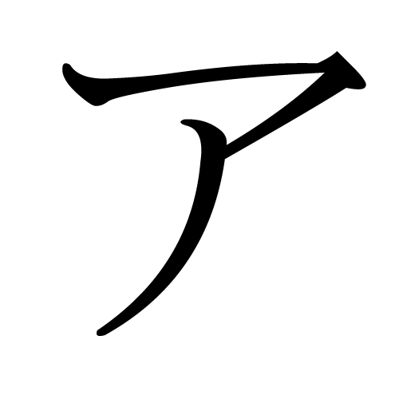
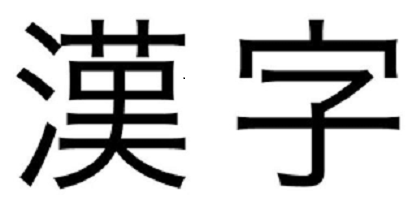

HIRAGANA
Hiragana (ひらがな) is a Japanese syllabary, part of the Japanese writing system, along with katakana as well as kanji. It is a phonetic lettering system. The word hiragana literally means "flowing" or "simple" kana ("simple" originally as contrasted
with kanji). Hiragana is used to write okurigana (kana suffixes following a kanji root, for example to inflect verbs and adjectives), various grammatical and function words including particles, as well as miscellaneous other native words
for which there are no kanji or whose kanji form is obscure or too formal for the writing purpose.

KATAKANA
Katakana (カタカナ) is a Japanese syllabary, one component of the Japanese writing system along with hiragana, kanji and in some cases the Latin script (known as rōmaji). The word katakana means "fragmentary kana", as the katakana characters are
derived from components or fragments of more complex kanji. The katakana syllabary is used for transcription of foreign-language words into Japanese and the writing of loan words for emphasis; to represent onomatopoeia; for technical and
scientific terms; and for names of plants, animals, minerals and often Japanese companies.

KANJI
Kanji (漢字) are logographic characters (based on the traditional ones) taken from the Chinese script and used in the writing of Japanese. They were made a major part of the Japanese writing system during the time of Old Japanese, and are still
used, along with the natively derived syllabic scripts of hiragana and katakana.Starting in the 1920s, the Japanese government has published character lists periodically to help direct the education of its citizenry through the myriad
Chinese characters that exist. There are nearly 3,000 kanji used in Japanese names and in common communication.